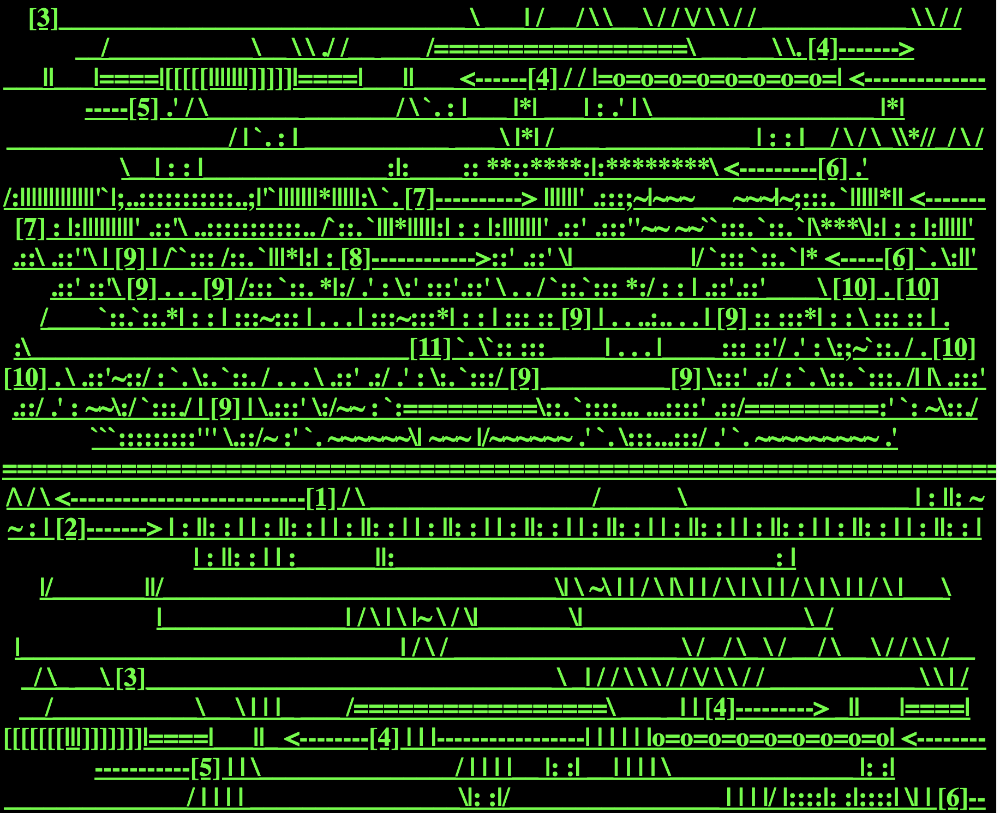
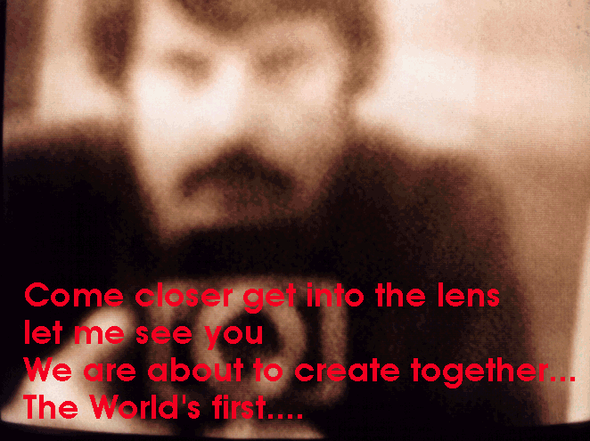
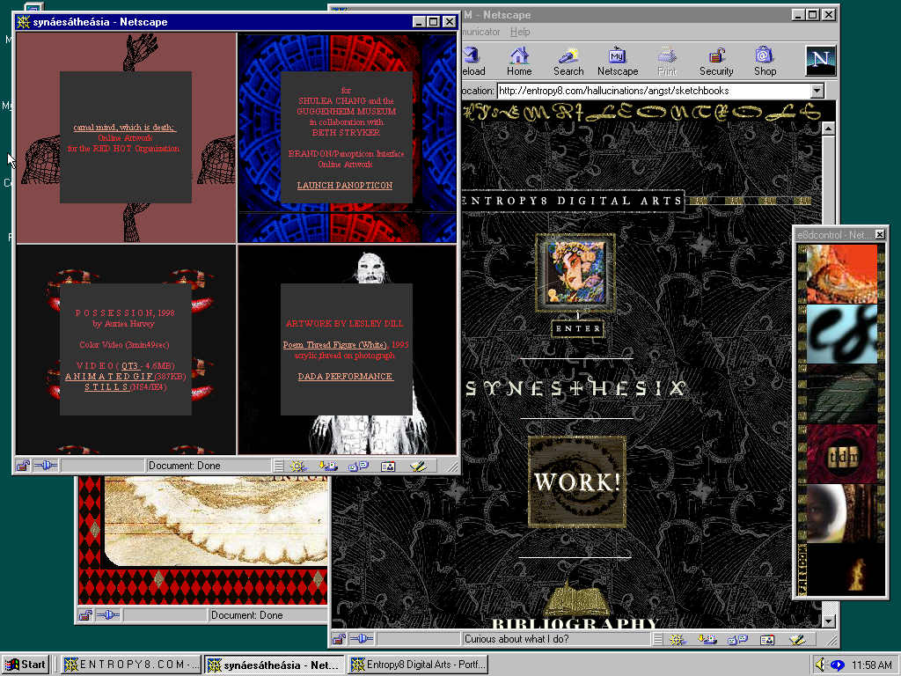

Characteristics of Early Internet Art
- Interactivity and Participation - Early internet art required the viewer to become a participant, often transforming passive browsing into active engagement.
- Immateriality and Virtual Existence - Unlike traditional art, early internet art often existed only in the digital realm, defying physicality and traditional gallery structures.
- Networkability and Connectivity - The art was often distributed and social, relying on email lists, web browsers, and hyperlinks to create a "networked" experience.
- Use of "Web 1.0" Aesthetics and Code - Artists often used the raw tools of the early internet—basic HTML code, browser frames, glitch aesthetics, and early graphic user interfaces—as their medium.
- Subversion of Institutions and Commercialism - Early internet art often held a "utopian," democratic ethos, aiming to bypass traditional art galleries, museums, and market structures.
| Artist | Artwork | Thumbnail |
|---|---|---|
| Olia Lialina |
My Boyfriend Came Back From the War (1996)
View Project A hypertext narrative using HTML frames to tell a nonlinear story about a couple's reunion after war. |

|
| JODI |
http://wwwwwwwww.jodi.org/ (1995)
View Project A chaotic, anti-aesthetic website that treats code and error messages as art, deconstructing the browser interface. |
 |
| Douglas Davis |
The World's First Collaborative Sentence (1994)
View Project An interactive work where anyone could add to an ever-growing sentence, one of the first internet art pieces commissioned by a museum. |
 |
| Auriea Harvey |
entropy8.com (1997)
View Project A personal website that became an influential art space, featuring interactive narratives and digital sculptures. |
 |
| _readme.html |
_readme.html (1997) View Project A conceptual work that uses the default filename "_readme.html" to create a self-referential piece about the nature of the web. |